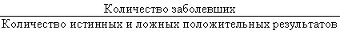
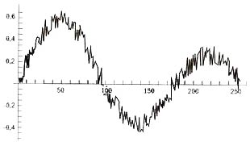
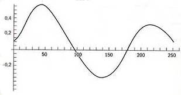

{% include JB/setup %}
{% raw %}
<div>

<span><span><p class="p1">Люди, которых можно считать преступниками в соответствии с законами вероятности (то есть с уверенностью, исключающей <em class="calibre">тень сомнения)</em>, гуляют на свободе из-за нашего непонимания простейших понятий случайности. Или же вас могут обвинить в преступлении, которого вы не совершали, и опять из-за плохого знания вероятности, ведь у нас все еще нет суда, который мог бы правильно вычислять совместную вероятность двух событий (вероятность того, что два события произошли одновременно). Я был в дилинговом зале, где работал телевизор, и слышал, как один из адвокатов утверждал, что в Лос-Анджелесе как минимум четыре человека могут иметь те же характеристики ДНК, что и О. Джей Симпсон (игнорируя понятие о наборе из двух событий, а каким образом — мы увидим в следующем абзаце). После этого я с отвращением выключил телевизор, вызвав ропот среди трейдеров. До этого момента у меня было впечатление, что софистику исключили из судебного процесса благодаря высоким стандартам республиканского Рима. Хуже того, один адвокат из Гарварда лицемерно заявил о том, что только 10 % мужчин, грубо обходящихся со своими женами, доходят до убийства, такова вероятность, необусловленная фактом убийства (неважно, было ли заявление сделано им в результате ложно понятого долга адвоката, чистого злого умысла или невежественности). И это закон, стоящий на страже истины? Вот правильный способ смотреть на такие вещи: определить долю случаев убийства, когда женщины были убиты своими мужьями, которые <em class="calibre">и раньше</em> били их (она равна 50 %), поскольку мы имеем дело с тем, что называется «условная вероятность»; вероятность того, что О. Джей убил свою жену, <em class="calibre">обусловлена</em> тем, что она убита, в отличие от <em class="calibre">безусловной</em> вероятности того, что О. Джей убил свою жену. Как можно ожидать, что необученный человек поймет случайность, когда профессор Гарварда, имеющий дело с вероятностными свидетельствами и преподающий этот предмет, может выдвигать настолько ошибочные аргументы?</p><p class="p1">Особенно часто члены жюри присяжных (и судьи) склонны делать ошибки, как и мы все, в случае совместной вероятности. Они не понимают, что свидетельства накладываются друг на друга. Вероятность того, что в один и тот же год у меня обнаружат рак верхних дыхательных путей и что меня собьет розовый «Кадиллак», если вероятность каждого из событий 1/100 000, равна 1/10 000 000 000 — за счет перемножения вероятностей двух (очевидно независимых) событий. Учитывая то, что О. Джей Симпсон на основании анализа крови имел 1/500 000 шанса не быть убийцей (вспомните, адвокаты занимались софистикой, утверждая, что по Лос-Анджелесу ходят четыре человека с таким же типом ДНК), и добавив сюда тот факт, что он был мужем убитой, и другие свидетельства, получаем (учитывая эффект наложения) шансы против него в несколько триллионов триллионов.</p><p class="p1">«Разумные» люди совершают более грубые ошибки. Я могу вызвать удивление, сказав, что совместная вероятность двух событий ниже, чем каждого из них. Вспомните эвристику доступности: в случае «проблемы Линды» рациональные и образованные люди считают, что совместная вероятность двух событий выше, чем большая из вероятностей каждого из них. Мне нравится быть трейдером, извлекающим выгоду из ошибок людей, но мне страшно жить в таком обществе.</p><p class="empty-line"></p><p class="p1"><strong class="calibre3">Абсурдный мир</strong></p><p class="p1">Пророческая книга Кафки «Процесс» о затруднительном положении Йозефа К., арестованного по таинственной и необъяснимой причине, попала в точку, поскольку была написана еще до того, как мы услышали о методах «научных» тоталитарных режимов. В ней спроецировано уродливое будущее человечества, искривленное абсурдной самодостаточной бюрократией, в котором правила возникают спонтанно, обусловленные внутренней логикой этой бюрократической машины. Книга даже породила целую «литературу абсурда»; возможно, мир слишком нелеп. Некоторые адвокаты приводят меня в ужас. Слушая заявления, сделанные в ходе суда над О. Джей Симпсоном (и оценивая их эффект), я был напуган, по-настоящему напуган возможностью того, что я могу быть арестован по какому-то обвинению, не имеющему никакого смысла с вероятностной точки зрения, и буду вынужден бороться со скользким адвокатом перед жюри присяжных, неграмотным в вопросах случайности.</p><p class="p1">Мы говорили о том, что, возможно, для жизни в примитивном обществе было достаточно простого суждения. Когда пространство возможных исходов одномерно, общество может легко обходиться без математики, а трейдеры — торговать без применения количественных методов. Одномерность означает, что мы смотрим на единственную переменную, а не на набор различных событий. Цена одной ценной бумаги одномерна, в то время как набор котировок нескольких ценных бумаг имеет множество измерений и требует математического моделирования — мы не можем просто так, невооруженным глазом, увидеть весь диапазон возможных значений окончательной стоимости портфеля акций и даже не в состоянии представить их на графике, поскольку наш физический мир ограничен визуальным представлением объектов только в трех измерениях. Позднее мы поговорим о том, почему мы соглашаемся рисковать, используя плохие модели (надо сказать, что это случается), или совершаем ошибку попустительства невежеству, лавируя между Харибдой адвоката, не знающего математики, и Сциллой математика, который неправильно использует свои знания, поскольку не может выбрать правильную модель. Другими словами, нам приходится спасаться и от внешне гладких, но бессмысленных высказываний отвергающих науку юристов, и от ложных теорий некоторых излишне «серьезных» экономистов. Красота науки состоит в том, что она делает скидку на ошибки обоих типов. К счастью, есть срединный путь, но, к несчастью, по нему редко идут.</p><p class="empty-line"></p><p class="p1"><strong class="calibre3">Примеры ошибок в понимании вероятности</strong></p><p class="p1">В литературе о поведении я нашел как минимум сорок убийственных примеров подобных серьезных ошибок, систематических отклонений от рационального поведения во всех профессиях и областях деятельности. Ниже приведена выдержка из хорошо известного теста, за который должно быть стыдно медикам. Вот знаменитый вопрос, который задавали врачам, я позаимствовал его из отличной книги Деборы Беннетт «Случайность» <em class="calibre">(Randomness).</em></p><div class="cite">
<p class="p1">Тест на наличие заболевания дает 5 % ошибочных положительных результатов. Заболевание поражает 1/1000 популяции. Люди проходят тест случайным образом, независимо от того, есть ли подозрение на заболевание. Тест пациента положительный. Какова вероятность того, что пациент болен?</p>
</div><p class="p1">Большинство врачей ответили, что вероятность равна 95 %, так как они учли только точность теста. Правильный ответ — условная вероятность того, что пациент болен и что тест это покажет, составит около 2 %. Меньше чем один из пяти профессионалов дали верный ответ.</p><p class="p1">Я упрощу ответ (используя частотный подход). Предположим отсутствие ошибочных отрицательных результатов и предположим, что из 1000 пациентов, прошедших тест, только один болен. Из оставшихся 999 здоровых пациентов тест покажет около 50 положительных результатов. Правильный ответ состоит в расчете вероятности того, что кто-то из пациентов, выбранных случайно и показавших положительный результат теста, действительно болен, с помощью следующей дроби:</p><div class="image">

</div><p class="p1">В данном случае это 1 к 51.</p><p class="p1">Подумайте о том, сколько раз вам назначали имеющие разрушительное побочное действие лекарства от болезни, которой, как вам говорили, вы страдаете, при том что могла быть только 2-процентная вероятность того, что вы ею болели!</p><p class="p1"><em class="calibre">Мы слепы к опционам</em></p><p class="p1">Торгуя опционами, я заметил, что люди склонны их недооценивать, поскольку обычно не в состоянии правильно оценить в уме инструменты, приносящие <em class="calibre">неопределенный</em> результат, даже несмотря на знание математики. Регулирующие ведомства только усиливают это невежество, объясняя людям, что опционы — <em class="calibre">это убывающие</em> или <em class="calibre">истощающиеся</em> активы. Считается, что опционы «вне денег» <em class="calibre">истощаются,</em> теряя свою премию между датами покупки и исполнения.</p><p class="p1">Дальше я поясню, что такое опционы, на упрощенном (хотя и достаточном) примере. Скажем, акция торгуется по 100 долларов, и кто-то дает мне право (но не возлагает обязанность) купить ее за 110 долларов через месяц от нынешнего дня. Это называется опционом «колл». Для меня имеет смысл <em class="calibre">исполнить</em> его, попросив продавца передать мне акцию за 110 долларов, только если она через месяц будет торговаться по цене выше 110 долларов. Если цена доходит до 120 долларов, мой опцион принесет мне 10 долларов, поскольку я смогу купить акцию за 110 долларов у продавца опциона и продать ее на рынке за 120, положив разницу в карман. Но вероятность этого не слишком высока. Тогда ситуация называется «вне денег», поскольку я не получаю немедленной выгоды из-за того, что опцион исполняется не сразу.</p><p class="p1">Предположим, что я покупаю этот опцион за 1 доллар. Какую стоимость опциона я ожидаю увидеть через месяц? Большинство людей думают, что 0 долларов. Это не так. Опцион имеет высокую вероятность (скажем, 90 %) иметь стоимость 0 долларов на дату исполнения, но, возможно, есть 10-процентная вероятность, что он будет стоить в среднем 10 долларов. Таким образом, продажа мне опциона за 1 доллар не означает «легких» денег для продавца. Если бы вместо этого продавец сам купил акцию за 100 долларов и подождал месяц, он мог бы продать ее за 120 долларов. Таким образом, доход в размере 1 доллара теперь не может считаться «легкими» деньгами. Точно так же купленный опцион — не «истощающийся» актив. Даже профессионалы бывают одурачены. Как? Они путают ожидаемую стоимость и наиболее вероятный сценарий (в данном случае ожидаемая стоимость равна 1 доллару, а наиболее вероятный сценарий для опциона — стоить 0 долларов). В уме они переоценивают состояние, которое наиболее вероятно, т. е. что рынок не будет двигаться вообще. По сути, опцион — это просто средневзвешенное значение возможных состояний актива.</p><p class="p1">Есть еще один тип удовлетворения, которое получает продавец опциона. Это стабильный доход и стабильное чувство вознаграждения — то, что психологи называют «поток». Очень приятно утром идти на работу с мыслью, что заработаешь немного денег. И нужна определенная твердость характера, чтобы смириться с ожиданием стабильной потери небольших сумм, даже если стратегия доказала свою прибыльность в долгосрочной перспективе. Я заметил, что очень немногие трейдеры, работающие с опционами, могут поддерживать то, что я называю «длинной волатильной» позицией, которая, скорее всего, приведет к потере незначительного количества денег на дату исполнения, но, как ожидается, в долгосрочной перспективе окажется прибыльной из-за эпизодических рывков рынка. Я встречал очень мало людей, которые готовы терять 1 доллар в большинстве случаев исполнения, иногда зарабатывая 10 долларов, даже если игра стоит свеч (т. е. если они зарабатывают 10 долларов свыше чем в 9,1 % случаев).</p><p class="p1">Сообщество трейдеров, работающих с опционами, я делю на две категории: <em class="calibre">продавцов страховки</em> и <em class="calibre">покупателей страховки.</em> Продавцы страховки (их еще называют продавцами опционов), продавая их, обычно получают стабильный доход, как Джон в главах 1 и 5. Покупатели страховки — наоборот. Продавцы опционов, так сказать, клюют по зернышку, как куры, и ходят купаться шумно, как слоны. Увы, но большинство встреченных мной трейдеров, работавших с опционами, были <em class="calibre">продавцами страховки</em> — когда они «лопаются», деньги обычно теряют другие.</p><p class="p1">Почему профессионалы, казалось бы, имеющие представление об этой (простой) математике, оказываются в таком положении? Как уже обсуждалось ранее, наши действия не вполне управляются той частью мозга, которая диктует рациональные решения. Мы думаем с помощью эмоций, и обойти их невозможно. В силу одной и той же причины люди, в остальном вполне рациональные, курят, ввязываются в схватки, не сулящие им немедленной выгоды, или продают опционы, даже зная, что это не самое лучшее занятие. Но дела обстоят еще хуже. Есть категория людей, обычно это ученые-финансисты, которые не действия «подгоняют» к своим мозгам, а мозги — к своим действиям. Эти люди смотрят в прошлое и с помощью статистики невольно вводят себя в заблуждение, оправдывая свои действия. В моем бизнесе они одурачивают сами себя статистическими аргументами, чтобы обосновать свою продажу опционов.</p><p class="p1">Что лучше — потерять 100 раз по 1 доллару или один раз 100 долларов? Ясно, что второе: так меньше ощущается потеря. Поэтому с гедонистической точки зрения торговая стратегия, в течение длительного времени приносящая 1 доллар в день, а затем приводящая к потере всего заработанного, на самом деле приятнее, пусть экономически она и не имеет смысла. Вот почему у трейдеров нередко возникает желание проанализировать историю на предмет вероятности таких событий и воплотить эту стратегию в жизнь.</p><p class="p1">Кроме того, нужно учитывать фактор невежества, сопутствующий представлениям о рисках. Ученые проводили исследования, чтобы проверить то, о чем я упоминал в прологе: люди принимают на себя риски, потому что отличаются мужеством или потому что недооценивают их? Исследователи просили испытуемых предсказать верхнюю и нижнюю границы диапазона будущих котировок ценных бумаг, которые позволили бы респондентам чувствовать себя комфортно, если с вероятностью 98 % цены останутся в указанном диапазоне. Конечно, оказалось, что котировки вышли за эти границы очень сильно, отклонившись от диапазона на величину до 30 %.</p><p class="p1">Эти ошибки вытекают из очень серьезной проблемы: люди переоценивают свои знания и недооценивают вероятность того, что могут быть неправы.</p><p class="p1">Один пример для иллюстрации дальнейшей опционной слепоты. Что имеет большую стоимость: а) договор, по которому вы получаете 1 млн долларов, если фондовый рынок падает на 10 % в любой заданный день следующего года; б) договор, по которому вы получаете 1 млн долларов, если фондовый рынок падает на 10 % в любой заданный день следующего года в результате террористического акта? Я думаю, что большинство людей выберут б).</p><p class="subtitle">Вероятность и СМИ (снова журналисты)</p><p class="p1">Журналиста учат методам самовыражения, а не проникновения в суть вещей — процесс отбора ориентирован на наиболее коммуникабельных, и при этом необязательно на наиболее знающих. Мои приятели-врачи утверждают, что многие журналисты, пишущие о медицине, ничего не понимают ни в ней, ни в биологии, зачастую совершая самые нелепые ошибки. Не могу подтвердить это, поскольку читаю о медицинских исследованиях как простой любитель (хотя иногда и ненасытно), но я замечал, что журналисты почти всегда не понимают вероятности, о которой идет речь в отчетах о результатах исследования. Наиболее распространенная ошибка связана с интерпретацией свидетельств. Чаще всего путают <em class="calibre">отсутствие свидетельства</em> и <em class="calibre">свидетельство отсутствия</em> (проблема, аналогичная рассмотренной в главе 9). Почему? Предположим, я тестирую некую химиотерапию, например «Флюороурацил», предназначенную для лечения рака верхних дыхательных путей, и обнаруживаю, что она лучше, чем плацебо, но незначительно; то есть сама по себе (отдельно от прочих способов терапевтического воздействия) она увеличивает шанс выжить с 21 на 100 до 24 на 100. Учитывая размер выборки, я не уверен, что эти дополнительные 3 % — результат лечения; скорее они могут быть результатом случайности. Я мог бы написать статью, в которой привел бы свои результаты и высказал мнение, что свидетельств увеличения шансов выжить в результате приема этого лекарства (пока) нет и что нужны дополнительные исследования. Медицинский журналист подхватил бы сказанное, заявив: профессор Н. Н. Талеб обнаружил доказательства того, что «Флюороурацил» <em class="calibre">не помогает. </em>А ведь это прямо противоположно моим намерениям. Некий наивный врач в каком-нибудь Малгороде, еще менее разбирающийся в вероятности, чем самый необразованный журналист, в свою очередь, подхватил бы сказанное, выстроив «ментальный блок» против лекарства, несмотря на то что другой исследователь позднее мог бы найти новые подтверждения явных преимуществ препарата с точки зрения шансов выжить.</p><p class="empty-line"></p><p class="p1"><strong class="calibre3">CNBC за ланчем</strong></p><p class="p1">Создание финансового телеканала CNBC дало финансовому сообществу множество преимуществ, но также позволило компании практиков-экстравертов, имеющих свои теории, излагать их в отведенные им несколько минут телевизионного времени. Зачастую можно увидеть респектабельных людей, делающих смехотворные (но серьезно звучащие) заявления о свойствах фондового рынка. Среди них встречаются утверждения, вопиюще нарушающие законы вероятности. В одно лето я усердно посещал спортивный клуб, где часто слышал слова о том, что «рынок реальных активов упал лишь на 10 % от максимального значения, в то время как акции в среднем снизились на 40 %», что подавалось как индикатор глубоких проблем или аномалий — как некий предвестник «медвежьего» рынка.</p><p class="p1">Противоречия в том, что средняя акция упала на 40 % от максимального значения, в то время как среднее всех акций (то есть рынок) упало на 10 %, нет. Необходимо учитывать, что акции не достигают своих вершин все разом <em class="calibre">в одно и то же время.</em> Учитывая, что акции не коррелируют друг с другом на 100 %, акция А могла достигнуть максимума в январе, акция Б могла достигнуть максимума в апреле, а среднее двух акций А и Б могло быть максимальным где-то в феврале. Более того, в случае отрицательной корреляции акций, если А находится на максимуме, в то время как Б — на минимуме, они обе могут упасть на 40 % от своих максимумов, и при этом фондовый рынок будет штурмовать высоты! В соответствии с законом вероятности под названием «распределение максимума случайных переменных» максимум среднего обязательно менее волатилен, чем средний максимум.</p><p class="empty-line"></p><p class="p1"><strong class="calibre3">К этому моменту вы должны были умереть</strong></p><p class="p1">Это вызывает в памяти еще одну ошибку в вопросе о вероятности, распространенную среди финансовых экспертов телевизионного прайм-тайма, которых могли выбрать за их внешний вид, харизму и презентационные способности, но уж точно не за острый ум. Например, часто встречается следующее заблуждение, как-то озвученное одной дамой, известным финансовым гуру: «Средняя продолжительность жизни американца 73 года. Следовательно, если вам 68, вы можете ожидать, что проживете еще пять лет, в соответствии с этим вам и нужно составлять свои планы». И дальше она пустилась в подробные предписания относительно того, как человеку следует инвестировать в расчете на пятилетний горизонт. Хорошо, а если вам 80 лет? Ваша ожидаемая продолжительность жизни составляет <em class="calibre">минус</em> семь лет? Что путают журналисты, так это безусловную и условную среднюю продолжительность жизни. При рождении ваша безусловная средняя продолжительность жизни может быть 73 года. Но по мере того как ваш возраст увеличивается и вы не умираете, ваша средняя продолжительность жизни увеличивается тоже. Почему? Потому что другие люди, умирая, занимают ваше место в статистике, которая оценивает именно среднюю продолжительность жизни. Так что если вам 73 и у вас хорошее здоровье, вы можете прожить еще, скажем, девять лет <em class="calibre">в среднем.</em> Но эта продолжительность жизни будет меняться, и в 82 года у вас будет еще пять лет, если, конечно, вы еще живы. Даже у столетнего старца все еще положительная условная продолжительность жизни. Приведенное выше заявление, если подумать, не слишком отличается от следующей фразы: «Смертность в ходе нашей операции равна 1 %; к этому моменту мы сделали 99 очень успешных операций, вы наш сотый пациент, следовательно, у вас 100-процентный шанс умереть на операционном столе».</p><p class="p1">Финансовые эксперты с ТВ могут запутать множество людей. Это довольно болезненно. Но что тревожит сильнее, так это когда информация передается непрофессионалами для профессионалов; к таким журналистам мы и переходим.</p><p class="empty-line"></p><p class="p1"><strong class="calibre3">Объяснения системы Bloomberg</strong></p><p class="p1">У меня на рабочем месте установлен отдельный компьютер с системой <em class="calibre">Bloomberg</em> (которая названа в честь легендарного основателя одноименной компании Майкла Блумберга). Она служит для безопасного обмена сообщениями электронной почты, является информационным порталом, средством получения исторических данных и построения диаграмм, бесценным аналитическим помощником, и, наконец, последнее, но немаловажное — на экране я вижу котировки ценных бумаг и валют. Я стал настолько зависимым от этой системы, что без нее ничего не могу делать, чувствуя, как если бы меня отрезали от всего остального мира. Я использую ее для связи с друзьями, подтверждения встреч и разрешения тех забавных ссор, которые вносят определенную остроту в жизнь. В некотором смысле трейдеры, не имеющие идентификатора в системе Bloomberg, для нас не существуют (им приходится прибегать к помощи более плебейского Интернета). Но есть один аспект системы Bloomberg, от которого я избавился бы: от журналистских комментариев. Почему? Потому что журналисты пытаются объяснять происходящее и постоянно с вполне серьезным видом путают левую и правую колонки. Конечно, система Bloomberg не единственная злодейка, просто в последние десять лет я не подвержен влиянию такого сектора бизнеса, как газеты, предпочитая читать взамен настоящую прозу.</p><p class="p1">Сейчас, когда я пишу эти строки, на экране моей системы Bloomberg видны следующие заголовки:</p><div class="cite">
<p class="p1"><em class="calibre">Dow вырос на 1,03 на сообщениях о понижении процентных ставок</em></p>
<p class="p1"><em class="calibre">Доллар упал на 0,12 к иене на новостях о высоком профиците Японии.</em></p>
</div><p class="p1">И так по всей странице. Если я переведу это как следует, то окажется, что журналист пытается объяснить нечто, являющееся <em class="calibre">абсолютным шумом.</em> Движение индекса Dow на 1,03 пункта при его значении на уровне 11 000 означает его отклонение менее чем на 0,01 %. Такие изменения не требуют анализа. Здесь нет ничего, что честный человек мог бы попытаться обосновать; нет причин никому ничего растолковывать. Однако журналисты, подобно начинающим преподавателям сравнительно-исторического литературоведения, получают зарплату за объяснения и с радостью и готовностью их предоставляют. Было бы, безусловно, правильно, если бы Майкл Блумберг прекратил оплачивать комментарии своих журналистов.</p><p class="p1"><em class="calibre">Значимость.</em> Как я решил, что это абсолютный шум? Рассмотрим простую аналогию. Если вы с другом едете на велосипедах по Сибири и через месяц опередили его на одну секунду, вам, конечно, не стоит особо кичиться тем, что вы быстрее его. Кто-то мог вам помочь, или это могло быть чистой случайностью, ничем больше. Разница в одну секунду недостаточно значима, чтобы делать заключения. Я бы не стал писать в своем дневнике перед сном: «Велосипедист А лучше, чем велосипедист Б, потому что питается шпинатом, в то время как Б сидит на диете, богатой соевым творогом. Я сделал это заключение, потому что А обошел Б на 1,3 секунды в ходе 3000-мильной гонки». Если бы разница составила неделю, вот тогда я бы начал анализировать — был ли ее причиной соевый творог или какие-то другие факторы.</p><p class="p1"><em class="calibre">Причинно-следственная связь.</em> Это еще одна проблема; даже предполагая статистическую значимость, нужно согласиться с наличием причины и следствия, то есть с тем, что событие на рынке может быть связано с предложенной причиной: <em class="calibre">Post hoc ergo propter hoc</em> (после этого — следовательно, вследствие этого). Скажем, в больнице А родилось 52 % мальчиков, а в больнице Б в том же году — только 48 %; станете ли вы утверждать, что у вас родился сын потому, что это случилось в больнице А?</p><p class="p1">Причинно-следственная связь может быть очень сложной. Очень трудно выделить какую-то одну причину, когда вокруг их множество. Нужно проводить многофакторный анализ. Например, если фондовый рынок может отреагировать на внутренние процентные ставки США, на курс доллара против иены, на курс доллара против европейских валют, на европейские фондовые рынки, на платежный баланс США, на темпы инфляции в США и еще на десяток основных факторов, тогда журналистам нужно посмотреть на все эти факторы, посмотреть на то, как они исторически влияли на фондовый рынок вместе и по отдельности, посмотреть на стабильность этого влияния, а затем, приняв во внимание статистику, лежащую в основе критерия, выделить нужный фактор — если это возможно сделать. Наконец, у самого фактора должен наличествовать высокий уровень доверия; если он ниже 90 %, то говорить не о чем. Я могу понять, почему Юм был буквально одержим проблемой причинно-следственной связи и не мог признать влияния этой связи где-либо.</p><p class="p1">Если в мире произойдет что-то <em class="calibre">действительно</em> серьезное, у меня есть способ узнать об этом. Мой монитор системы Bloomberg настроен так, чтобы на нем отражались цены (и их изменения в процентном отношении) всех основных активов мира: валют, акций, процентных ставок и биржевых товаров. При этом неизменно графики с курсами валют находятся в левом верхнем углу, а индексы различных фондовых рынков справа, так что в результате изучения одной и той же картинки в течение многих лет я научился инстинктивно определять, происходит ли что-то серьезное. Хитрость в том, чтобы смотреть только на большие процентные изменения. Пока котировка не меняется сильнее, чем обычно в течение дня, событие считается «шумом». Процентные изменения определяют важность новостей. Кроме того, их интерпретация нелинейна; движение на 2 % по сравнению с движением на 1 % имеет значимость не в два раза выше, а, скорее, в 4-10 раз. Изменение на 7 % может быть в несколько миллиардов раз важнее, чем на 1 %! Новость о движении Dow на 1,3 пункта на моем экране сегодня имеет значимость менее одной миллиардной от серьезного падения индекса на 7 % в октябре 1997 года. Меня могут спросить: почему я хочу, чтобы все хоть немного разбирались в статистике? Причина заключается в том, что слишком многие люди верят чужим пояснениям. Ведь инстинктивно понимать нелинейный аспект вероятности нам не дано.</p><p class="empty-line"></p><p class="p1"><strong class="calibre3">Методы фильтрации</strong></p><p class="p1">Инженеры используют определенные методы для очистки «сигнала» от «шума» в данных. Сталкивались ли вы когда-нибудь с тем, что при разговоре с кузеном из Австралии или с Южного полюса вам приходится отделять статические помехи в телефонной линии от голоса вашего корреспондента? Метод очистки основан на том, что небольшие изменения амплитуды, скорее всего, являются результатом шума, а при росте магнитуды этих изменений экспоненциально растет вероятность того, что они представляют собой сигнал. Метод использует взятую из статистики технологию «сглаживающего ядра», и его применение показано на рис. 11.1 и 11.2. Но наш слуховой аппарат сам по себе не способен выполнить эту функцию самостоятельно. Точно так же наш мозг не может увидеть разницу между значительным ценовым изменением и простым «шумом», особенно когда на него давит несглаженный журналистский шум.</p><p class="p1"><sup class="a"><strong class="calibre1">Рис. 11.1.</strong> Данные, не прошедшие фильтрацию и содержащие — сигнал» и «шум»</sup></p><div class="image">

</div><p class="p1"><sup class="a"><strong class="calibre1">Рис. 11.2.</strong> Те же данные, из которых удален «шум»</sup></p><div class="image">

</div><p class="p1"><em class="calibre">Мы не учитываем уровни доверия</em></p><p class="p1">Профессионалы забывают о следующей вещи: не столько много значит сама оценка или прогноз, сколько уровень доверия к ним. Представьте себе, что однажды осенним утром вы собираетесь в путешествие и хотите выяснить, каковы погодные условия, прежде чем паковать чемодан. Если вы ожидаете, что температура будет 15,5 °C плюс-минус 5,5 градуса (скажем, в Аризоне), то вам не нужно брать с собой зимнюю одежду и переносной электрообогреватель. А если бы вы собирались в Чикаго, где температура, как вам говорили, может быть на уровне 15,5 градуса, а потом быстро измениться на 16,5 градуса? Вам пришлось бы паковать и зимнюю, и летнюю одежду. В этом примере при выборе одежды важен даже не сам прогноз температуры, важны ее изменения. Ваше решение относительно того, что брать с собой, очень изменилось, как только вам сказали о колебаниях температуры примерно на 16,5 градуса. А теперь пойдем дальше: что если бы вы собирались на некую планету, где тоже ожидается температура на уровне 15,5 градуса, но колебания могут составить плюс-минус 260 градусов? Что бы вы стали паковать?</p><p class="p1">Как вы поняли, мои действия на рынке (и по отношению к другим случайным переменным) намного меньше зависят от предполагаемого направления его движения или прогноза изменений этих случайных переменных, сколько от степени ошибки, то есть от допустимого уровня доверия.</p><p class="empty-line"></p><p class="p1"><strong class="calibre3">Признание</strong></p><p class="p1">Закончим эту главу следующим заявлением: я считаю, что могу быть одурачен случайностью, как и все, кого я знаю, несмотря на свою профессию и время, потраченное на получение опыта в данной области. Но есть одно отличие от остальных: я знаю об этой своей очень большой слабости. Моя человеческая природа пытается сбить меня с толку, так что мне приходится быть начеку. Я был рожден для того, чтобы меня дурачила случайность. Поговорим об этом в части III.</p></span></span>
</div>

{% endraw %}

